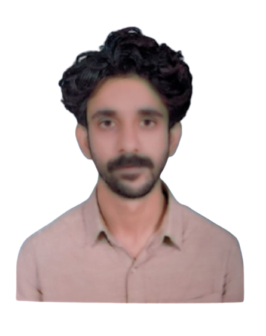

Research practice
Undergraduate research involving literature review, data collection, social analysis, documentation, and academic writing.
Social Work graduate interested in social policy, community development, social inclusion, and women’s economic empowerment. I connect academic research with the everyday challenges faced by underserved communities.

My academic and field experiences have shaped my interest in how social programmes, public services, and community-based initiatives can expand opportunity and improve well-being.
My undergraduate thesis explored the role of Industrial Homes (Sanatzar) in women’s economic empowerment. Through fieldwork with rural families, I also engaged with barriers to children’s education and helped families connect with available support.
I aim to strengthen my research and policy skills through further study and contribute to practical, evidence-informed social development.
Thesis supervisor: Dr. Sadia Rafi
Explored community-based skill development and its relationship to women’s economic participation, financial independence, and social inclusion. This work continues to inform my interest in local programmes that support women’s agency and livelihoods.
Undergraduate research involving literature review, data collection, social analysis, documentation, and academic writing.
Interest in social factors that shape access to education, services, livelihoods, and community resources.
Emerging interest in how digital access and AI-supported learning may influence opportunities for disadvantaged students.
Conducted door-to-door outreach with rural households where low literacy and out-of-school children were concerns. Discussed barriers to school attendance with parents, assisted families with school enrolment, and shared information about government scholarships and financial support. The role strengthened my skills in community communication, trust-building, and identifying barriers to public services.
Supported learning activities for disadvantaged communities.
Helped community health activities and distribution of essential supplies to low-income families.
Participated in radio awareness programmes about COVID-19, vaccination, and education.
University of Sargodha · Sargodha, Pakistan
CGPA: 3.28 / 4.00
For academic supervision enquiries, research opportunities, and collaboration related to social policy, community development, and social inclusion, please feel free to contact me.